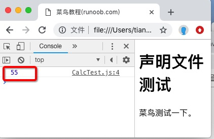

TypeScript 声明文件
声明文件是 TypeScript 与 JavaScript 库之间的翻译官，它告诉 TypeScript 一个 JavaScript 库暴露了哪些功能、参数是什么类型、返回值是什么类型。
先从一个问题说起
假设你正在用 TypeScript 写项目，需要引入一个第三方的 JavaScript 库（比如 jQuery），你可能会写出这样的代码：
$('#foo');
// 或
jQuery('#foo');
这段代码在纯 JavaScript 项目中完全没问题，但在 TypeScript 文件中会直接报错：
jQuery('#foo');
// index.ts(1,1): error TS2304: Cannot find name 'jQuery'.
为什么会报错？因为 TypeScript 不认识 $ 和 jQuery 是什么。
TypeScript 的核心功能就是类型检查——它在编译阶段就要知道每个变量、每个函数的类型。但 jQuery 是一个纯 JavaScript 库，没有任何类型信息，TypeScript 自然看不懂它。
快速修复：declare 关键字
最简单的方式是用 declare 关键字手动告诉 TypeScript：「这个变量存在，它的类型是这样的」：
declare var jQuery: (selector: string) => any;
jQuery('#foo');
这行代码的含义是：声明一个变量 jQuery，它是一个函数，接收一个 string 类型的参数，返回值可以是任意类型（any）。
现在 TypeScript 就不会报错了，因为编译器已经知道 jQuery 是什么类型。
declare 关键字声明的类型只在编译阶段起作用，编译后的 JavaScript 代码中会被完全删除，不会影响运行时的行为。
上例编译后的 JavaScript 代码为：
jQuery('#foo');
可以看到，declare 语句消失了，只剩下了实际的调用代码。
但 declare 只能解决单个文件的临时问题。如果一个库有很多方法、很多类，在每个文件里都手写 declare 显然不现实。这就是声明文件的用武之地。
声明文件：一劳永逸的方案
声明文件就是把所有 declare 声明集中放到一个单独的文件里，项目中的任何 TypeScript 文件都可以引用它。
文件命名规范
声明文件统一以 .d.ts 为后缀，d 代表 declaration（声明）。例如：
runoob.d.ts
基本语法
声明一个模块的语法如下：
declare module Module_Name {
}
在 TypeScript 文件中通过三斜线指令引入声明文件：
/// <reference path = "runoob.d.ts" />
三斜线指令是 TypeScript 特有的语法，用于告诉编译器在编译时需要包含指定的声明文件。
很多流行第三方库（如 jQuery、Lodash）的声明文件已经由社区维护好了，存放在 DefinitelyTyped 项目中。你只需要通过 npm 安装对应的 @types/xxx 包即可使用，无需手动编写。
完整实例：从零创建声明文件
下面通过一个完整的例子，演示声明文件的创建和使用全流程。
整个流程涉及以下文件：
| 文件 | 作用 |
|---|---|
| CalcThirdPartyJsLib.js | 第三方 JavaScript 库（纯 JS，无类型信息） |
| Calc.d.ts | 声明文件（手动编写，描述库的类型） |
| CalcTest.ts | TypeScript 业务代码（引用声明文件，调用库） |
| CalcTest.js | 编译产物（tsc 编译后的 JS 文件） |
| runoob.html | 浏览器中运行的最终页面 |
第一步：创建第三方 JavaScript 库
假设我们有一个第三方库，提供了累加求和的功能。它使用命名空间 Runoob 来组织代码，避免变量名冲突：
CalcThirdPartyJsLib.js 文件代码：
// 这是一个模拟的第三方 JavaScript 库
// 声明 Runoob 命名空间变量（如果不存在则创建空对象）
var Runoob;
// 使用立即执行函数（IIFE）封装代码，避免内部变量泄漏到全局作用域
(function(Runoob) {
// Calc 构造函数，用于创建计算器对象
var Calc = (function () {
function Calc() {
// 当前无需初始化参数，保留构造函数以便后续扩展
}
})
// doSum 方法：计算从 0 到 limit 的所有整数之和
// limit（必填）：累加的上限值，包含该值本身
// 示例：limit=10 时，计算 0+1+2+...+10 = 55
Calc.prototype.doSum = function (limit) {
var sum = 0;
for (var i = 0; i <= limit; i++) {
sum = sum + i;
}
return sum;
}
// 将 Calc 构造函数挂载到 Runoob 命名空间下
// 这样外部就可以通过 new Runoob.Calc() 来创建实例
Runoob.Calc = Calc;
return Calc;
})(Runoob || (Runoob = {}));
// 库内部自测代码
var test = new Runoob.Calc();
这个库用到了一个常见模式：立即执行函数（IIFE）。通俗理解，就是把代码包在一个函数里立即运行，这样函数里定义的变量不会跑到外面去，避免和其他代码的变量名冲突。
第二步：编写声明文件
现在我们有了 JS 库，但它没有任何类型信息。需要创建一个声明文件，只描述库的「形状」——有哪些类、有哪些方法、参数和返回值各是什么类型——但不包含任何实际代码逻辑：
Calc.d.ts 文件代码：
// 这是声明文件，只包含类型信息，不包含任何可执行代码
// 声明 Runoob 模块，与 JS 库中的 Runoob 命名空间对应
declare module Runoob {
// 声明 Calc 类，告诉 TypeScript 这个类可以被 new 实例化
export class Calc {
// 声明 doSum 方法：接收一个 number 参数，返回一个 number
// 注意：这里只声明了方法的签名，没有方法体（大括号）
doSum(limit: number): number;
}
}
声明文件和普通 .ts 文件的最大区别：声明文件只有类型签名，没有实现代码。它只回答「这个函数长什么样」，不回答「这个函数做了什么」。
第三步：在 TypeScript 代码中使用
现在编写业务代码，引用声明文件后，就可以像使用原生 TypeScript 库一样使用这个第三方 JS 库了：
CalcTest.ts 文件代码：
// 三斜线指令：告诉 TypeScript 编译器引入声明文件
/// <reference path = "Calc.d.ts" />
// 创建 Calc 实例，TypeScript 现在能正确识别 obj 的类型
var obj = new Runoob.Calc();
// obj.doSum("Hello"); // 编译错误！"Hello" 是字符串，而 doSum 要求传入 number
console.log(obj.doSum(10)); // 正确调用：传入 10，期望得到 55
注意被注释掉的那一行：
obj.doSum("Hello");
如果取消这行的注释，TypeScript 编译时会直接报错，因为声明文件中已经规定了 doSum 只接受 number 类型参数。这就是类型检查在保护你——错误在写代码时就暴露出来，而不是等到浏览器运行时才崩溃。
第四步：编译 TypeScript
使用 TypeScript 自带的 tsc 命令编译：
tsc CalcTest.ts
编译后会生成 CalcTest.js 文件，内容如下：
CalcTest.js 编译产物：
/// <reference path = "Calc.d.ts" />
var obj = new Runoob.Calc();
//obj.doSum("Hello"); // 编译错误
console.log(obj.doSum(10)); // 运行结果：在控制台输出 55
可以看到，三斜线指令和声明文件中的类型信息在编译产物中都不见了，只剩下纯粹的 JavaScript 运行代码。
第五步：在浏览器中运行
最后，创建一个 HTML 页面把所有 JS 文件串联起来：
实例
<html>
<head>
<meta charset="utf-8">
<title>菜鸟教程(runoob.com)</title>
<!-- 第 1 步：加载第三方库，让 Runoob 命名空间在全局可用 -->
<script src = "CalcThirdPartyJsLib.js"></script>
<!-- 第 2 步：加载编译后的业务代码 -->
<script src = "CalcTest.js"></script>
</head>
<body>
<h1>声明文件测试</h1>
<p>菜鸟测试一下。</p>
</body>
</html>
用浏览器打开这个 HTML 文件，打开控制台（F12），可以看到输出结果：
55
这就是 doSum(10) 的返回值：0+1+2+...+10 = 55。

小结
声明文件本质上是一份「类型说明书」，让 TypeScript 能够理解和检查纯 JavaScript 库。
整个工作流程可以概括为三步：
1. 拿到一个 JS 库，分析它暴露了哪些 API。
2. 编写 .d.ts 声明文件，描述这些 API 的类型签名。
3. 在 TypeScript 代码中引用声明文件，即可享受完整的类型检查保护。
对于日常开发中常用的第三方库，绝大多数已经有现成的声明文件（通过 npm install @types/xxx 安装）。只有当你用到非常冷门的库或内部私有库时，才需要手动编写声明文件。

点我分享笔记